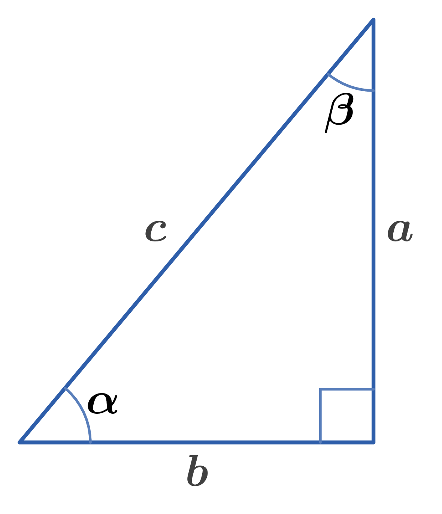
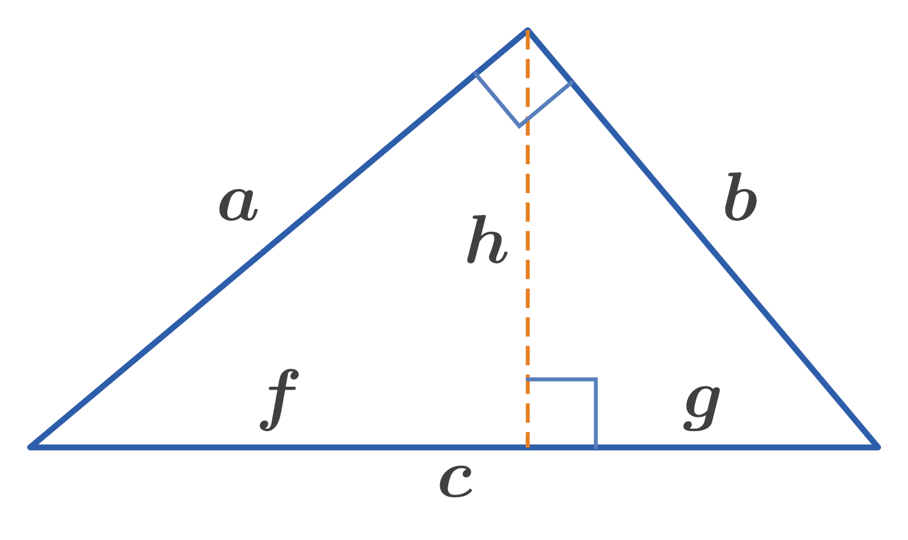
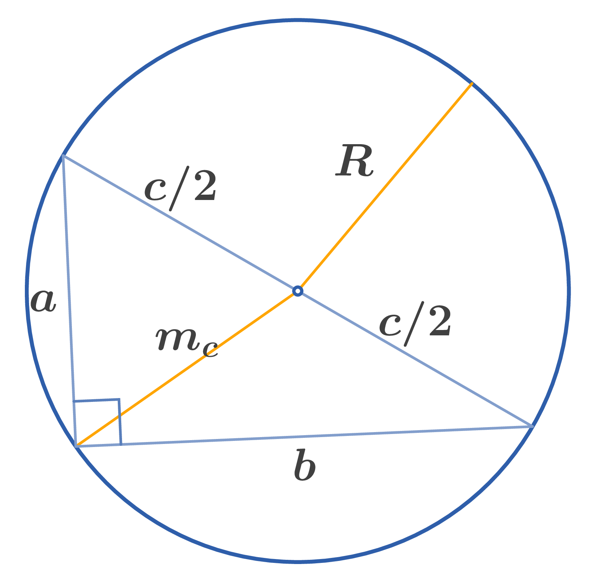

Legs of a right triangle: $a,b$
Hypotenuse: $c$
Altitude: $h$
Medians: $m_a,m_b,m_c$
Angles: $\alpha,\beta$
Radius of circumscribed circle: $R$
Radius of inscribed circle: $r$
Area: $S$

Figure: Right triangle 1
$\alpha + \beta = 90^\circ$
Sine and Cosine relationship in a right triangle:
$$ \sin \alpha = \dfrac{a}{c} = \cos \beta $$
Cosine and Sine relationship in a right triangle:
$$ \cos \alpha = \dfrac{b}{c} = \sin \beta $$
Tangent and Cotangent relationship in a right triangle:
$$ \tan \alpha = \dfrac{a}{b} = \cot \beta $$
Cotangent and Tangent relationship in a right triangle:
$$ \cot \alpha = \dfrac{b}{a} = \tan \beta $$
Secant and Cosecant relationship in a right triangle:
$$ \sec \alpha = \dfrac{c}{b} = \operatorname{cosec} \beta $$
Cosecant and Secant relationship in a right triangle:
$$ \operatorname{cosec} \alpha = \dfrac{c}{a} = \sec \beta $$
Pythagorean Theorem:
$$ a^{2} + b^{2} = c^{2} $$
Projections of the legs onto the hypotenuse:
$$ a^{2} = fc, \quad b^{2} = gc $$
where $f$ and $g$ are projections of the legs $a$ and $b$, respectively, onto the hypotenuse $c$.

Figure: Right triangle 2
165. Altitude from the right angle:
$$ h^{2} = fg $$
where $h$ is the altitude from the right angle to the hypotenuse.
Medians to the legs:
$$ m_{a}^{2} = b^{2} - \dfrac{a^{2}}{4}, \quad m_{b}^{2} = a^{2} - \dfrac{b^{2}}{4} $$
where $m_{a}$ and $m_{b}$ are the medians to the legs $a$ and $b$.

Figure: Right triangle 3
Median to the hypotenuse:
$$ m_{c} = \dfrac{c}{2} $$
where $m_{c}$ is the median to the hypotenuse $c$.
Circumradius of a right triangle:
$$ R = \dfrac{c}{2} = m_{c} $$
Inradius of a right triangle:
$$ r = \dfrac{a + b - c}{2} = \dfrac{ab}{a + b + c} $$
Area relationship in a right triangle:
$$ ab = ch $$
Area of a right triangle:
$$ S = \dfrac{ab}{2} = \dfrac{ch}{2} $$